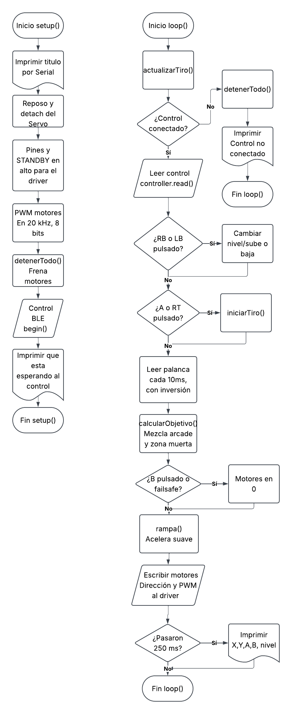
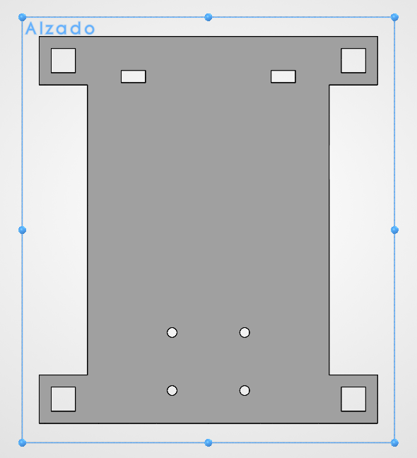

Proyecto 1: Carro por Bluetooth
Institución - Universidad Iberoamericana Puebla
Materia - Introducción a la Mecatrónica
Integrantes:
Daniel Alejandro Trejo Macías
Carlos Mario Diaz Moscoso
Johan Mauricio Cerqueda Rojas
Jose Pablo Sanchez Guerrero
Abraham Ramirez Garcia
Objetivo
Construir en equipo un carro controlado por Bluetooth, integrando los conocimientos del curso (electrónica, microcontrolador, actuadores, comunicación y mecanismos), el cual será usado en un torneo de fútbol RC
Requisitos
Funcionales
- El carro se mueve adelante, atrás, izquierda, derecha y alto por comandos Bluetooth.
- Control de velocidad por PWM (mínimo 3 niveles o velocidad proporcional).
- El protocolo de comandos está documentado en el portafolio (qué comando hace qué).
- Failsafe: si se pierde el enlace o no llegan comandos en ≤1 s, el carro se detiene solo.
- Interruptor físico de encendido/apagado accesible sin desarmar nada.
- Alimentación de motores separada del ESP32 (con GND común), como se vio en el tema de Actuadores
- Cableado ordenado y sujeto: nada de cables sueltos arrastrando
- Superficie plana horizontal de al menos 6 × 6 cm en la parte superior, despejada: ahí vivirá el marcador ArUco del Proyecto Final.
Propios
- Que sea controlable mediante un control de Xbox
- Que tenga pinzas rigidas enfrente para maniobrar la pelota
- Que pueda moverse con dos llantas traseras y una frontal
- Los cables de los motores deben poder atravesar el chasis
para poder conectarlos al puente H - Que cuente con carrocería para restringir los contenidos del chasis
y así no se salgan - Que use un servo en las pinzas para "patear"
la pelota.
Arquitectura

Plan por semanas
- Semana 1: Programación del codigo inicial, Diseño del chasis, Diseño y programación de la app de prueba para controlar el carro
- Semana 2: Cableado del ESP32, Puente H y Motores, Diseño de la carrocería, Soldado de los cables, Impresión del chasis y de la carrocería, Ajustes al código para manejar por control al carro.
Criterios de exito
- Cumplir con todos los requisitos funcionales
- Que el carro se pueda manejar mediante un control
- No exceder el limite de área de 20x20cm
Boceto del chasis

BOM
| Componente | Precio | Obtención |
|---|---|---|
| Portapilas | $70 | Comprado |
| Power Bank | $350 | Comprado |
| Baterias | $440 | Comprado |
| Servo | 100 | Comprado |
| ESP32 | $180 | Reutilizado |
| Puente H TB6612 | $102 | Prestado |
| Motores TT con caja reductora | $140 | Prestado |
| Llantas de plastico | $49 | Comprado |
| Rueda loca | $20 | Comprado |
| Tonillos y tuercas | $10 | Prestado |
| Power Bank | $350 | Comprado |
| Impresión del Chasis | $16 | Prestado |
| Impresión de la Carrocería | $60 | Prestado |
| Jumpers | $60 | Prestado |
| Mini switch | $20 | Comprado |
Análisis de riesgos
- Sobreesfuerzo del servo resultando en que deje de funcionar - Reemplazar con otro servo
- Se deshaga alguna soldadura - Volver a soldar
- Descarga de baterías - Sustituir por otras baterias mientras las anteriores se recargan
- Los motores avancen muy lento - Usar un powerbank para mas alimentación
- El carro no se mueve - Verificar conexiones
Bitácora de fallas
| ¿Qué falló? | ¿Cómo lo encontraron? | ¿Cómo lo resolvieron? |
|---|---|---|
| El servo hacía todos los movimientos que debían ir a los motores | Usamos la app prototipo para controlar el servo y motores | Corregimos unas conexiones sueltas |
| El servo nunca se detenía | Usamos el control de Xbox para controlar el carro una vez que terminamos las conexiones | Ajustamos el código para asegurar que el servo se detuviera |
| El servo dejó de funcionar por sobreesfuerzo | Luego de corregir el codigo el servo ya se detenía internamente, pero el componente externo todavía no giraba | Conseguimos un servo de reemplazo, pero ya no hubo tiempo para sustituir las conexiones, asi que descartamos el uso del servo |
| El carro no se movía | Probamos varías veces a encender el carro para ver si ya funcionaba, pero ninguno de los motores se movía | Verificamos las conexiones y reemplazamos las baterías, además de que volvimos a subir el código |
Video de funcionamiento
Haz click aqui para el videoRequisitos vs Resultados
| # | Requisito | ¿Se cumplió? |
|---|---|---|
| 1 | El carro se mueve adelante, atrás, izquierda, derecha y alto por comandos Bluetooth. | Si |
| 2 | Control de velocidad por PWM (mínimo 3 niveles o velocidad proporcional). | Si |
| 3 | El protocolo de comandos está documentado en el portafolio (qué comando hace qué). | Si |
| 4 | Failsafe: si se pierde el enlace o no llegan comandos en ≤1 s, el carro se detiene solo. | Si |
| 5 | Interruptor físico de encendido/apagado accesible sin desarmar nada. | Si |
| 6 | Alimentación de motores separada del ESP32 (con GND común), como se vio en el tema de Actuadores | Si |
| 7 | Cableado ordenado y sujeto: nada de cables sueltos arrastrando | Si |
| 8 | Superficie plana horizontal de al menos 6 × 6 cm en la parte superior, despejada: ahí vivirá el marcador ArUco del Proyecto Final. | Si |
| 9 | Que sea controlable mediante un control de Xbox | Si |
| 10 | Que tenga pinzas rigidas enfrente para maniobrar la pelota | Si |
| 11 | Que pueda moverse con dos llantas traseras y una frontal | Si |
| 12 | Los cables de los motores deben poder atravesar el chasis para poder conectarlos al puente H | Si |
| 13 | Que cuente con carrocería para restringir los contenidos del chasis y así no se salgan | Si |
| 14 | Que use un servo en las pinzas para "patear" la pelota. | No |
Lecciones aprendidas
- Hacer el trabajo con anticipación - Hacer avances desde que el proyecto fue encargado nos ayudó a usar el amplio tiempo para corregir errores que se iban presentando.
- Checar que las conexiones estén bien - En muchas ocasiones cuando algo fallaba, al verificar las conexiones nos dabamos cuenta de que una de las conexiones se había separado, y al corregirlo funcionaba después en la mayoría de los casos.
- Asegurarse de que el material comprado sea el adecuado - Cuando estabamos a punto de conectar el portapilas, notamos que era demasiado pequeño para las pilas que usaríamos, asi que terminamos gastando dinero de más.
Se utilizó Claude AI para generar la estructura del diagrama del código, el esquematico de conexiones, y la estructura del README del carro